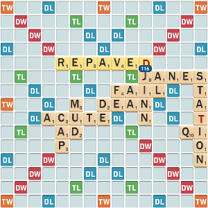

Scrabble
Looking for the 98-252 course page?
I started playing Scrabble through the School Scrabble program when I was 12 years old. I attended the National School Scrabble Championships in 2008 and 2009, partnering with Danilo Vicioso and Bryan Poellot and finishing 26th and 18th, respectively. After graduating from 8th grade and becoming too old to play School Scrabble, my Scrabble activity decreased due to the much harder competition in adult tournaments and my getting more involved with music and other activities. Recently, upon starting college at Carnegie Mellon, I've started playing more Scrabble again, and I attend a few tournaments as well as help direct the newly-forming Scrabble Club at CMU.
In Fall 2014, I am teaching a StuCo class called "Wordplay: Fundamentals of Scrabble Strategy." The course number is 98-252.
Music
My love for and involvement in classical music has developed steadily over the years. I began playing viola in the 3rd grade with my intermediate school orchestra, and started taking private lessons with Elizabeth Kaplan in high school. Somewhere along the way I picked up a violin, and found that I enjoyed playing that as well.
I continue to practice and study viola at CMU, and I've played viola and violin in the All-University Orchestra and String Theory. My favorite, though, is to perform in small chamber ensembles and quartets - so if you're interested in playing something together, please !
My favorite period of music is the transition between the Classical and Romantic periods, and (some of) my favorite composers are Beethoven, Mendelssohn, Schubert, Tchaikovsky, and Chopin.
Code Philosophy
I hate hacking. This may sound strange coming from an avid programmer, but it's true. For me, the beauty of programming lies in its logical structure and semantic organization. I strive always for the most elegant, cleanest, fastest solution - the right way and the best way to solve the problem at hand. This isn't always easy to find; it requires careful research, lots of reading through thick documentation, and being willing to frequently refactor large chunks of code. But it leaves me with a sense of understanding and satisfaction that copy-pasting an answer from Stack Overflow just can't provide.
I also believe firmly in clear, easy-to-read, and thorough documentation. This applies to every piece of code I write, from comments in my personal .bashrc to docstrings in a python script to Git commit messages. When I first started programming, I was one of those kids who thought comments were a waste of time. I quickly grew up from that, and I take pride in devoting time and thought to writing well-documented, easy-to-maintain code.
Though I'm averse to hacky code, I'm certainly not opposed to hackathons. The excitement of charging forward with a brand-new idea and coding for hours and hours without sleep is great, even if the time constraints don't allow for the perfectly methodical programming I prefer. I've participated in HackCMU and TartanHacks at CMU, and I look forward to doing more.
My current system is Linux Mint, my unbleached all-purpose editor is Vim. My cell phone, of course, remains the timeless and unbeatably reliable Samsung Convoy 3.